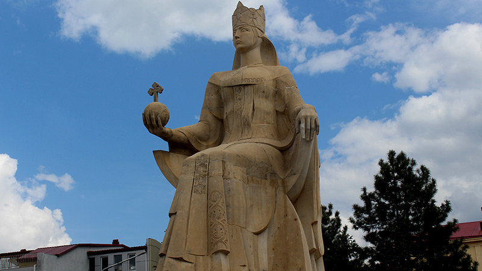
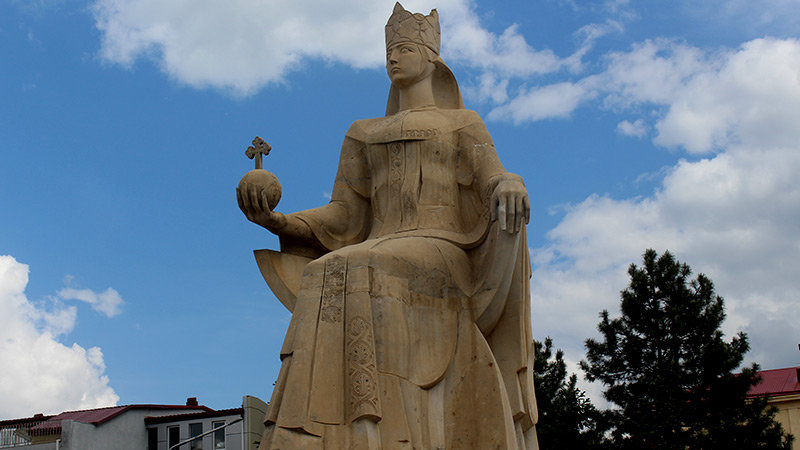

1179 წელს მეფე გიორგიმ თამარი თანამოსაყდრედ გამოაცხადა. 1184 წელს, მეფე გიორგის გარდაცვალების შემდეგ, ქვეყანაში რთული ვითარება შეიქმნა; ფეოდალურმა არისტოკრატიამ დაიწყო ბრძოლა დაკარგული პოლიტიკური პრივილეგიების აღსადგენად. 1185 წელს გავლენიან ფეოდალთა ერთმა ჯგუფმა თამარს, მისი სურვილის წინააღმდეგ, შერთო ანდრეი ბოგოლიუბსკის შვილი იური, რომელიც ქართულ წყაროებში ცნობილია „გიორგი რუსის“ სახელით. ორი-ორნახევარი წლის შემდეგ თამარი განქორწინდა და იური საქართველოდანაც განდევნეს. მეფე თამარი მეორედ დაქორწინდა დაახლოებით 1189 (ან 1187) წელს დავით სოსლანზე. თამარის დროს საქართველო კავკასიის უძლიერეს სახელმწიფოდ იქცა.ისტორიკოსთა ერთი ნაწილის აზრით, ეს ძლიერება არ ემყარებოდა ქვეყნის შინაგან საწარმოო ძალთა განვითარებას, გაერთიანებული ფეოდალური მონარქიის ეკონომიკური ძლიერების ძირითად წყაროს სამხედრო ნადავლი და ხარკი შეადგენდა და ქვეყნის გაერთიანება ეფემერული ხასიათისა იყო.ისტორიკოსთა მეორე ნაწილის აზრით, გაერთიანებული საქართველოს სიძლიერე შესაფერის სოციალურ-ეკონომიკურ ბაზისს ემყარებოდა.თამარის მეფობის პერიოდში რამდენიმე მნიშვნელოვანი ბრძოლა გაიმართა, რომელთაგან განსაკუთრებით აღსანიშნავია 1195 წლის შამქორისა და 1203 წლის ბასიანის ბრძოლები. თამარ მეფე ყოველმხრივ ცდილობდა, რომ მამის, გიორგი III-ისა და დიდი პაპის, დავით IV აღმაშენებლის, პოლიტიკური კურსი განეგრძო როგორც საშინაო, ისე საგარეო საქმეებში. ამ პერიოდში თურქები უკიდურესად შევიწროებულები იყვნენ. მდგომარეობამ ისინი აიძულა გაერთიანებასა და კოალიციურ ლაშქრობაზე ეფიქრათ. მათ ბაღდადის ხალიფას მიმართეს და განზრახული ლაშქრობის მოწყობაში დახმარება სთხოვეს. ბაღდადის ხალიფა, ფაქტობრივად, აღმოსავლეთის მუსლიმანური რელიგიის მეთაურად თვლიდა თავს და ქრისტიანების წინააღმდეგ „მართლმორწმუნეთა დასაცავად“ ყოველთვის მზად იყო. ხალიფამ ლაშქრობისთვის დიდი თანხები გამოჰყო. იმ დროისთვის, ირანის ადარბადაგანის მმართველი აბუ ბაქრი, ერთპიროვნული მბრძანებელი გახდა. სწორედ აბუ-ბექრმა ისარგებლა ხალიფას მატერიალური დახმარებით და მისი მოწოდებაც თავის სასარგებლოდ გამოიყენა. მან აღმოსავლეთის თურქთა დიდძალ ლაშქარს მოუყარა თავი. აბუ-ბექრი პირველად შირვანისკენ გაემართა. შირვანშაჰი აღსართანი და მისი სიძე ამირ-მირმანი ვერ გაუმკლავდნენ მტერს. შირვანი საქართველოს ყმადნაფიცი ქვეყანა იყო, შესაბამისად, საქართველოს შირვანის მიმართ გარკვეული ვალდებულებაც ეკისრა. საქართველოს სამეფო კარის გადაწყვეტილებით დიდძალი ლაშქარი შეიკრიბა. ქართველთა ლაშქარი ბრძოლისათვის გაემართა, შამქორისაკენ. ცხენოსანთა ლაშქარი მტკვრის მარჯვენა ნაპირიდან დაიძრა და მდინარე ხრამიდან შამქორისწყლამდე მანძილი დღე-ღამეში გაიარა. შამქორის ბრძოლა 1195 წელს გაიმართა ისტორიული ქალაქი შამქორი მდინარე შამქორისწყლის მარცხენა ნაპირზე მდებარეობდა და მნიშვნელოვანი სავაჭრო პუნქტი იყო. აბუ ბაქრი ქალაქში გამაგრდა, ამიტომ ქართული ლაშქრის მთავარი დარტყმის ობიექტად ქალაქი შეირჩა. ციხესიმაგრეზე შეტევას, ლაშქრის მარჯვენა ფრთა ახორციელებდა. დავით სოსლანის რაზმი ცუდი გზების გამო დაყოვნდა. მისმა მოსვლამ არსებითად შეცვალა ბრძოლის ვითარება. ამ ბრძოლაში გამარჯვება ქართველებს ხვდათ წილად.

 
